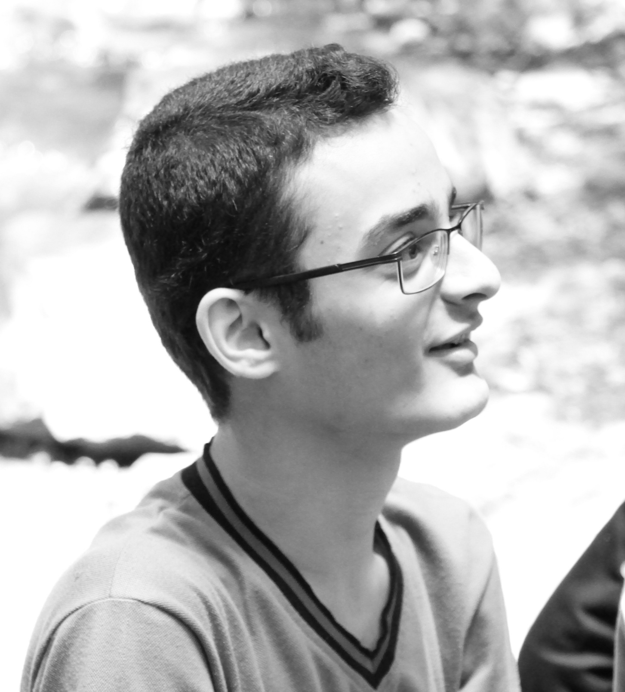

|  |
Seyed Mohammad MehdiAhmadpanah
Ph.D. Candidate and Lecturer Facebook Twitter LinkedIn GitHub My Booklets . Grad Talks . Against Plagiarism . CV Writing Tips . Anonymous Feedback |
![[AUT logo]](./index_files/autlogo.png)
Home | Research Interests | Education | Honors | Research and Work | Teaching | Courses | Other Activities | Technical Skills | References | CV
The latest update of my CV: [Short CV] [Full CV].
Research Interests
- Information-Flow Security
- Language-Based Security
- Formal Methods for Information Security
- Programming Languages and Compilers
Education
- Amirkabir University of Technology (Tehran Polytechnic)
- Ph.D. Candidate, Computer Engineering, Software
- September 2017 - now
- GPA: 17.70 / 20 (=4.00/4.00)
- Research Topics: Information-Flow Security, Program Analysis, Abstract Interpretation, Runtime Monitoring, Model Checking Supervisor: Prof. Mehran S. Fallah
- Amirkabir University of Technology (Tehran Polytechnic)
- M.Sc., Information Technology, Information Security
- September 2015 - September 2017
- GPA: 17.89 / 20
- Thesis: Improving Multi-Execution-Based Mechanisms for Enforcing Information Flow Policies, (Grade: 20/20) [pdf] Supervisor: Prof. Mehran S. Fallah, Jury: Prof. Mehdi Shajari and Prof. Ramtin Khosravi
- Amirkabir University of Technology (Tehran Polytechnic)
- B.Sc., Computer Engineering, Software
- September 2011 - September 2015
- GPA: 17.69 / 20 (140 Units)
- Thesis: A Tool for Rewriting-Based Enforcement of Noninterference in While Programs, (Grade: 20/20) [pdf] Supervisor: Prof. Mehran S. Fallah, Jury: Prof. MohammadReza Razzazi
- Refah High School
- Diploma in Mathematics and Physics
- September 2007 - June 2011
- GPA: High School 19.26 / 20, Pre-University 19.52 / 20
Honors
- Ranked top 3% among Lecturers of all departments of the university (830 lecturers), according to the student evaluation for teaching Advanced Programming,
Amirkabir University of Technology, Tehran, Iran, Spring 2018.
- Known as the Youngest Lecturer (at age 22), Lab. Instructor (at age 20) and Teaching Assistant (at age 16), Amirkabir University of Technology, Tehran, Iran.
- Honored as the Best Teaching Assistant of Computer Engineering and IT Department according to the student evaluation for Discrete Mathematics (Spring
2017) and Data Structures (Fall 2017) courses, Amirkabir University of Technology, Tehran, Iran.
- Offered for Direct Admission to graduate school (Ph.D.) in Computer Engineering - Software, from two top universities of Iran, University of Tehran and
Amirkabir University of Technology, without taking the Nationwide University Entrance Exam for Ph.D. as a reward of academic records and achievements,
Tehran, Iran, 2017.
- Ranked 1st and 2nd among all Laboratory Instructors in different topics of
Computer Engineering and IT Department according to the student evaluation
for teaching Computer Lab. and Operating Systems Lab., respectively, Amirkabir
University of Technology, Tehran, Iran, Fall 2016.
- Announced as the Outstanding Student and Achieved 1st place among 2015-
entries in Information Security major, Amirkabir University of Technology, Tehran,
Iran, 2016 and 2017.
- Awarded Outstanding Graduate Student Scholarship, Amirkabir University of Technology, Tehran, Iran, 2016.
- Admitted to Tarbiat-Modares University and Achieved 43rd place among all
applicants of the Nationwide University Entrance Exam for M.Sc. in Information
Technology (Approximately 30000 applicants), Iran, 2015.
- Honored as an Active Member of Student Scientific Association of Computer Engineering and IT Department (Announced as The best Student Scientific Association of the University), Amirkabir University of Technology, Tehran, Iran, 2015.
- Elected as The Most Polite and The Most Online student among all undergraduate 2011-entries of Computer Engineering and IT Department, Amirkabir University of Technology, Tehran, Iran, 2015.
- Member of Formal Security Laboratory, Computer Engineering and IT Department, Amirkabir University of Technology, Tehran, Iran, March 2015 - now.
- Qualified for Direct Admission to graduate school (M.Sc.) of Computer Engineering and IT Department, Amirkabir University of Technology, without
taking the Nationwide University Entrance Exam for M.Sc. as a reward of academic records and achievements, Tehran, Iran, 2014.
- Selected as a member of the university team for the National Scientific Olympiad
in Computer Engineering as a result of distinguished performance (3rd place
among undergraduate students), Amirkabir University of Technology, Tehran,
Iran, 2014.
- Achieved top 2% place among all applicants of the Nationwide University Entrance Exam for B.Sc. in Math. and Engineering (Approximately 260000 applicants), Iran, 2011.
- Achieved top 1.5% place among all applicants of the Nationwide University Entrance Exam for B.Sc. in Foreign Languages - English (Approximately 108000 applicants), Iran, 2011.
- Skipped Three grades of Elementary School as an Exceptional Talent, Tehran, Iran, 2002.
Research and Work Experiences
- Improving Multi-Execution-based Mechanisms for Enforcing Information Flow Policies
, November 2015 - Now
- M.Sc. Thesis - Formal Security Lab. [link]
- A Tool for Rewriting-Based Enforcement of Noninterference in While Programs, March 2015 - September 2015
- Kolah Sefid (Bug Bounty Platform), September 2018 - now
- Technical Referee (Web Application Security) and Consultant
- Kahkeshan Moshaver, June 2018 - now
- Security Consultant and Provider of Security Protection Profiles
- AUT CERT Lab., Summer 2015 and September 2018 - now
- Web Application Security Tester, Software Developer and Instructor
- Static Analysis of Unsafe Use of Variables in Java, Spring 2014
- This research has been done for Research Method and Technical Report Writings course (Technical Report, Oral Presentation and Poster). [link]
Teaching
I love teaching and I started it when I was 14 at high school. These are my academic experiences: (more in CV)As Lecturer:
- Advanced Programming, Spring 2018
As Lab. Instructor:
- Operating Systems Lab. , Spring 2016, Fall 2016
- Computer Lab. , Fall 2016 (two groups)
As Teaching Assistant:
- Discrete Mathematics, Under the supervision of Prof. Mostafa H. Chehreghani, Spring 2019
- Discrete Mathematics, Under the supervision of Prof. Mehran S. Fallah, Spring 2014, Spring 2016, Spring 2017, Spring 2019
- Design of Programming Languages , Under the supervision of Prof. Mehran S. Fallah, Fall 2014, Fall 2015, Fall 2016, Fall 2017, Fall 2018
- Data Structures, Under the supervision of Prof. Mehdi Dehghan Takht Fooladi, Fall 2013, Fall 2014, Fall 2016, Fall 2017
- Principles of Compiler Design, Under the supervision of Prof. MohammadReza Razzazi, Spring 2016, Fall 2016, Spring 2017
- Advanced Programming, Under the supervision of Prof. Seyed Majid Noorhosseini, Spring 2013, Spring 2014, Spring 2015
- Computer Networks II, Under the supervision of Prof. Masoud Sabaei, Spring 2015
- Information Storage and Retrieval, Under the supervision of Prof. Ahmad NickAbadi, Spring 2015
- Software Engineering I, Under the supervision of Prof. Bahman Pourvatan, Fall 2014
- Computer Architecture, Under the supervision of Prof. HamidReza Zarandi, Spring 2014
Courses
Ph.D.
Transcript: [English] [Farsi]- Program Analysis, 18.5/20
- Verification of Reactive Systems, 17.8/20
- Advanced Programming Languages, 17.5/20
- Object-Oriented Design Patterns, 17/20
M.Sc.
Transcript: [English] [Farsi]- Seminar, 19.5/20
- Software Systems Security, 19/20
- Database Security, 19/20
- Networks Security, 18.25/20
- Information Security S.C., 17.5/20
- Formal Models and Information Security, 17/20
- Secure Computer Systems, 16.6/20
- Security Protocols, 16/20
- Applied Cryptography, 14.5/20
B.Sc.
Transcript: [English] [Farsi]- Principles of Computer and Programming, 18/20
- Advanced Computer Programming, 19.5/20
- Technical English, 19/20
- Data Structures and Algorithms, 19/20
- Computer Architecture, 18.66/20
- Design of Algorithms, 18.75/20
- Operating System Design, 19/20
- Design of Programming Languages, 18/20
- Software Engineering I, 19.5/20
- Principles of Database Design, 19/20
- Research Method and Report Writings, 20/20
- Software Engineering II, 19/20
- Data Storage and Retrieval, 18.5/20
- Internet Engineering, 19.5/20
- Management and Control of IT Projects, 20/20
- Computer Networks II, 18.60/20
- All Department Laboratories, 20/20
- ...
Other Activities
(more in CV)- Founder and Coordinator of Grad Talks, Computer Engineering and IT Department, Amirkabir University of Technology, Jan. 2017 - present.
- Participant and Staff Member of the German-Austrian-Iranian Workshop on Digital Security and Privacy, Amirkabir University of Technology, Oct. 2016.
- Member of the Computer Society of Iran, Jun. 2016 - present.
- Consultant of the Student Scientific Association, Computer Engineering and IT Department, Amirkabir University of Technology, 2016 - now.
- Assistant Coordinator of the Computer Engineering team for National Scientific Olympiad, Computer Engineering and IT Department, Amirkabir University of Technology, 2016.
- Management Board Member and Chief of Informatics of the Student Scientific Association of Computer Engineering and IT Department (Elected by the votes of the students), Amirkabir University of Technology, Jan. 2014 - Feb. 2015.
- Staff Member of the 2nd Ideas and Programming competitions for Smart Devices (IranMobiCode 2014+) at Computer Engineering and IT Department, Amirkabir University of Technology, Dec. 2014.
- Staff Member of the 1st IdeasBazaar Event at Computer Engineering and IT Department, Amirkabir University of Technology, Dec. 2014.
- Staff member of the 14th collegiate ACM contest at Computer Engineering and IT Department, Amirkabir University of Technology, Nov. 2014.
- Staff member of the 6th Linux Festival at Computer Engineering and IT Department, Amirkabir University of Technology, May. 2014.
- Staff Member of the 1st Ideas and Programming competitions for Android (IranMobiCode 2014) at Computer Engineering and IT Department, Amirkabir University of Technology, Mar. 2014.
- Staff Member and Official Poster Designer of the 13th collegiate ACM contest at Computer Engineering and IT Department, Amirkabir University of Technology, Nov. 2013.
- Staff Member and Official Poster Designer of the 1st National student ACM contest at Computer Engineering and IT Department, Amirkabir University of Technology, Mar. 2013.
- Staff Member and Official Poster Designer of the 1st AUT AI programming contest at Computer Engineering and IT Department, Amirkabir University of Technology, Apr. 2013.
Technical Skills
- Programming Languages:
- Java, C/C++, Racket, OCaml, Shell Scripting, Mips
- Database Systems:
- MySQL, MongoDB
- Operating System:
- Windows, Linux (Ubuntu, Fedora and Kali)
- Web Development:
- HTML (XHTML and HTML 5), CSS, JavaScript, jQuery, PHP, Yii, XML, XSLT, J2EE
- Miscellaneous:
- Flex and Bison, Promela and Spin, MaudePSL, CEH Tools, MS Threat Modeling Tool, PREfast, SELinux, UML, GNS3, Boson NetSim, Cisco Packet Tracer, MS Project, VHDL, Verilog, Orcad Pspice, Proteus
References
- Mehran S. Fallah, Associate Professor
Computer Engineering and IT Department, Amirkabir University of Technology
Email: msfallah@aut.ac.ir
- MohammadReza Razzazi, Professor
Computer Engineering and IT Department, Amirkabir University of Technology
Email: razzazi@aut.ac.ir
- Seyed Majid Noorhosseini, Assistant Professor
Computer Engineering and IT Department, Amirkabir University of Technology
Email: majidnh@aut.ac.ir
- Mehdi Dehghan Takht Fooladi, Professor
Computer Engineering and IT Department, Amirkabir University of Technology
Email: dehghan@aut.ac.ir
- Ahmad NickAbadi, Assistant Professor
Computer Engineering and IT Department, Amirkabir University of Technology
Email: nickabadi@aut.ac.ir
- Hamid Reza Zarandi, Associate Professor
Computer Engineering and IT Department, Amirkabir University of Technology
Email: h_zarandi@aut.ac.ir
- Masoud Sabaei, Associate Professor
Computer Engineering and IT Department, Amirkabir University of Technology
Email: sabaei@aut.ac.ir
- Bahador Bakhshi, Assistant Professor
Computer Engineering and IT Department, Amirkabir University of Technology
Email: sabaei@aut.ac.ir
- Hossein Pedram, Associate Professor
Computer Engineering and IT Department, Amirkabir University of Technology
Email: pedram@aut.ac.ir
Template: Christian Skalka